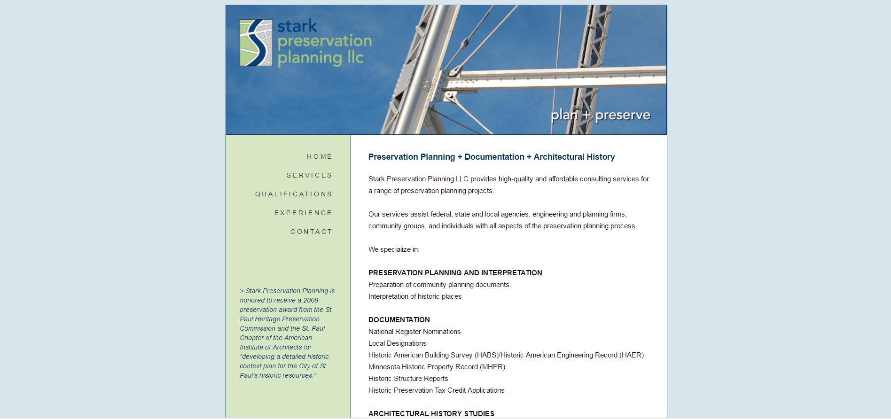
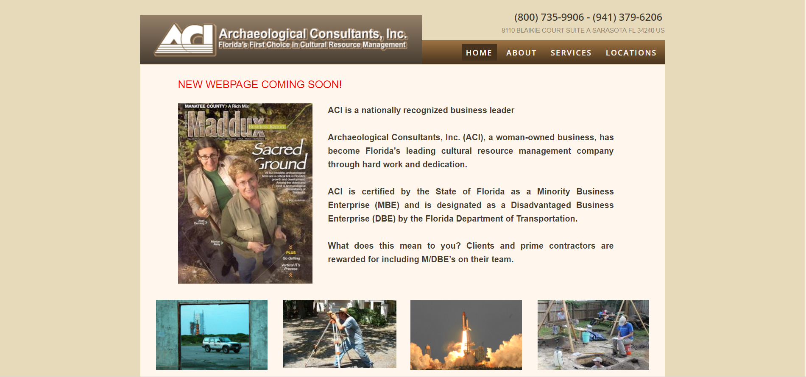

Requirement 1
Need-
Pathfinder CRM, LLC is a private business, offering Archeological Support and Historic Preservation services in the U.S. and abroad. The website is designed to advance the businesses mission, vision, brand and service(s) to core constituents and potential consumers. A secondary purpose is to provide information to the Archeological and Historic Preservation communities The current look and feel, structure and flow of the site is in our groups opinions leaving those that would frequent the website left dissatisfied with their overall user experience. We also agreed that the way the site is maintained leaves one to wonder if "Pathfinders" is still an active business or if their business has dissolved leaving only the remnants of an old website as an artifact of the business that once existed. Our teams goals for the website redesign are to:
- Update:create current look
- Reorganize:add much needed organization to the site's content
- Restructure:add ease of flow to the site's navigation
Strategies-
Redesign Team Strategy
GOAL:
Create a current web design ascetic for the Pathfinder CRM, LLC site that will accomplish an improved up-to-date look and feel and overall pleasing user experience.
BRANDING:
Establish a brand presence that Pathfinder CRM, LLC will become known for.
TARGET AUDIENCE:
The general audience seeking the services of Pathfinder CRM, LLC. are researchers and archeological enthusiasts, that place great value on the preservation of history, and its artifacts.
TOP TASKS:
- Update:create current look
- Reorganize:add much needed organization to the site's content
- Restructure:add ease of flow to the site's navigation
CRITICAL SUCCESS FACTORS:
- BRAND or name recognition
- Access to unique resources -niche related connections
- Customer Loyalty
TECHNOLOGY CONSTRAINTS:
- Budget for website redesign(real world issue).
- Website redesign goals and requirements not clearly defined.
- Project changes related to business needs or the need to revamp the redesign to make the project more scalable.
- Delays in the launch of the redesigned site.
- Maintenance
We chose 2 sites to model our redesign after:
 Our main focus for overall site redesign is strongly modeled after Archeological Consultants, Inc.. Stark Preservation's site helped us gain an better general understanding of the industry Pathfinder CRM, LLC is a part of and the level of order and organization required to best communicate to our target audience, while the simplicity Archeological Consultants, Inc. site fell in line with our vision for how a redesigned Pathfinder CRM, LLC site will appear.
Our team will utilize a few simple tools and technologies to manage our project. The tools and uses are as follows:
- Agile Process Management- managing website redesign.
- Canvas- Assignment Requirements, File Sharing, Communication.
- Dunwoody Email- email reminders
- Trello- project management application.
- Google Doc's- joint file creation, editing and storage.
- Notepad++- text and source code editing.
- GoogleChrome Web Browser/DevTools- iterate, debug, and profile website.
Content-
The redesigned website will have a total of 12 pages. The page titles and content breakdown are as follows:
- Home
- Services
- Staff
- Archeological Support Services
- Historic Preservation
- Where we work
- Logo
- Contact
| Page | Content |
|---|---|
| Home | Branding and general information about the businesses services, staff, contact information and site's navigation. |
| Services | Information and illustration relating to the services offered by the business. The services page also offers information on places Pathfinder U.S. and abroad. |
| Staff | Names, titles and direct contact information for company staff. This page also displays an image of each staff member that links directly to their credentials. |
| Staff Credential(4) | Credential information for each company staff member. The information includes each staff members area of expertise, experience, qualifications, education and any field specific published works. |
| Archeological S.S. | Information on all of the services offered under this umbrella. This page also displays an image relating to the services mentioned. |
| Historic Preservation | Information on all of the services offered under this umbrella. This page also displays an image relating to the services mentioned. |
| Where we work | Information of places Pathfinder CRM, LLC has worked in the U.S. and abroad. This page also displays an image relating to the locations mentioned. |
| Logo | Bears a large image of the company logo. In addition to the image, the page offers a detailed background on the meaning behind the company logo. |
| Contact | General contact information for the business. Including physical address, phone number and general email address. |
Target Audience-
General audience data: The general audience seeking the services of Pathfinder CRM, LLC. are researchers and archeology enthusiasts, that place great value on the preservation of history, and its artifacts.
Our group believes that offering more specific demographics would require us to make direct contact with the business. For the purpose of this assignment, we will not be making any contact with the business.
Becoming any more specific in the details of the business Target Audience would be limiting to the redesign we are preparing to do, and the goals we are aiming to accomplish. The site in it's current state likely attracts minimal traffic if any. We need to remain very inclusive, if we are to reach our goals.